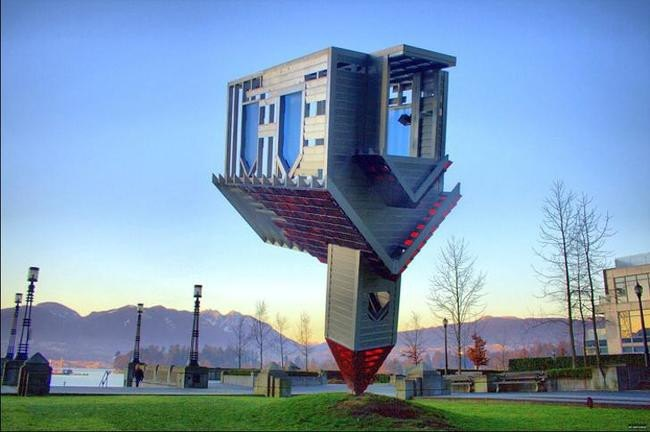
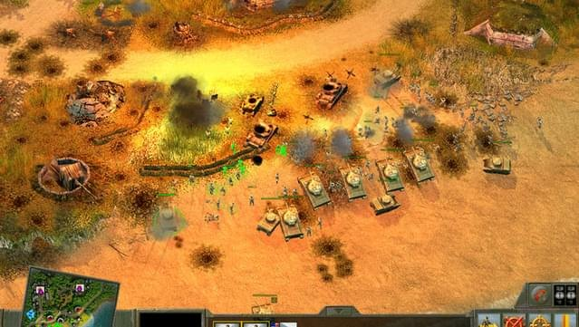
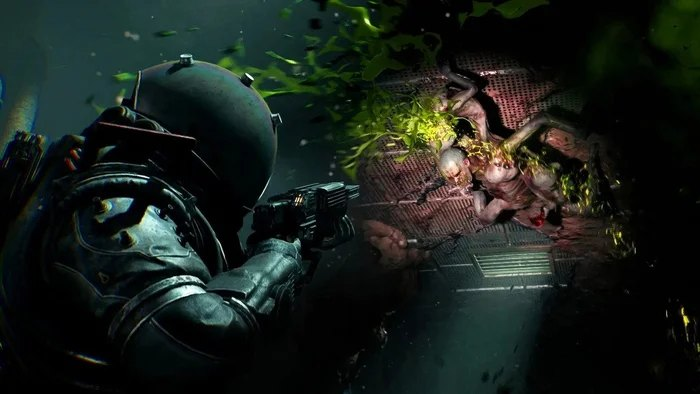
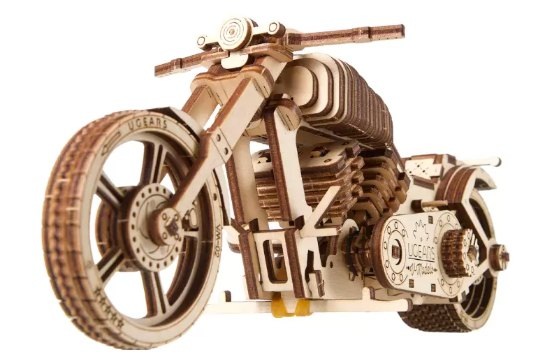

...ovvero perché i motori di gioco finiscono sempre allo stesso modo.
Vi siete mai chiesti come mai il motore più costoso del settore sia scritto in modo tale che sia più facile buttarlo via e riscriverlo da zero che capirlo e ripararlo. Oppure che lo studio di maggior successo abbia vissuto per dieci anni su un codice che gli stessi autori definivano «arrangiato alla meglio», e in italiano esiste un termine più adatto, comincia con m... e finisce con ...erda-code. E che un motore corretto dal punto di vista architetturale muoia nell'oblio, perché l'azienda ha finito i soldi per svilupparlo. Se non avete riconosciuto gli esempi, alla fine dell'articolo trovate la spiegazione.
Qualsiasi motore su cui girano giochi "vivi" attraversa quattro stadi: «in qualche modo funziona», «funziona, ma è imbarazzante mostrarlo», «non è imbarazzante mostrarlo, ma nessuno sa come funziona», e «funziona su un linguaggio a parte, che ci siamo inventati da soli». Poi il cerchio si chiude, e comincia un nuovo giro di storia, perché il team si rende conto che così non si può più andare avanti.
Chiarisco subito che questa è in gran parte una rielaborazione di pensieri altrui, di talk della GDC, di lezioni sui pattern e di chiacchierate con colleghi di grandi studi. I rimandi a parole e blog di vent'anni fa non sono qui per nostalgia, ma per sostanza, perché su internet le informazioni vivono poco, i blog degli anni zero sono già stati per metà cancellati, mentre le conclusioni di quindici anni fa sono tuttora attuali in modo quasi indecente.
Architettura e progettazione le fanno sempre persone diverse
La prima cosa da capire sui motori di gioco è che l'architettura del motore e la sua progettazione (nel senso di "progettazione dei sistemi") non sono sinonimi, e l'architetto e il progettista sono davvero due ruoli e due persone diverse, e allora viene fuori un buon lavoro, ma a volte le ricopre entrambe un unico barbuto e viene fuori come viene fuori, come in quella barzelletta... che se accompagni la ragazza e baci la macchina, entrambe le cose ti riescono male.
Perché l'architettura riguarda i processi e i risultati, mentre la progettazione dei sistemi riguarda quasi sempre le decisioni e le connessioni. E la cosa fondamentale nel lavoro del progettista non è scrivere bene invece che male: la progettazione comincia dove entrambe le soluzioni estreme sono buone, ma tirano in direzioni opposte, e allora la scelta avrà conseguenze di lungo termine che si faranno sentire tra un tre anni. Nel primo prototipo di un motore di solito è tutto brutto, e qui il progettista di solito rotola accanto come una quinta ruota, intralciando attivamente il team. Il lavoro del progettista è fare in modo che lungo tutti gli assi dello sviluppo ci sia la minima resistenza possibile nello scrivere codice e nel creare contenuti. Codice e contenuti stanno ai poli opposti dello sviluppo, quindi molto spesso è difficile, a volte impossibile.
Granularità: flessibilità <───────●──────> semplicità
Accoppiamento: disaccoppiato <──●───────> ingarbugliato (a destra non si va)
Flessibilità: applicazione <─────●──────> libreria
Coesione: comodità <───────●──────> ortogonalitàPerché le forze che spostano il cursore da una parte o dall'altra non riguardano quasi mai la programmazione, ma i soldi e le persone: quanti programmatori avete, quanti artisti, chi paga lo stipendio a chi e su chi si risparmierà. L'architetto invece progetta il sistema dei sistemi, e non gliene importa nulla di voi, dei soldi e delle persone... certo, se è un buon architetto di sistemi.
I pattern non riguardano il linguaggio di programmazione
Piccola digressione lirica. «pattern» spesso viene tradotto come «modello» (in russo «шаблон»), ma un modello è una forma rigida che non ammette variazioni ed è ormai radicata nell'uso comune. In inglese, per le diverse parti descrittive e le variazioni dello sviluppo, si usano più parole, il che arricchisce notevolmente sia il linguaggio, sia il contesto di comprensione, sia i talk stessi alle conferenze.
pattern non fissa la forma, ma descrive le forze (forces) e il modo in cui si risolvono, lasciando aperta l'implementazione concreta. I GoF hanno ereditato la parola, ma ne hanno un po' svuotato il senso, e i loro pattern sono molto più vicini ai modelli.
template forma rigida con dei buchi da riempire. Il template del C++ è il caso limite, in cui l'istanziazione è deterministica, qui non ci sono variazioni, solo in base al tipo-parametro.
idiom come convenzione di basso livello, specifica del linguaggio («RAII», «CRTP», «copy-swap»). Un giro di parole consolidato in un linguaggio specifico, ed è la cosa più vicina al senso linguistico della parola, come modo di dire riconoscibile.
blueprint è un piano da eseguire alla lettera, cioè un disegno tecnico ingegneristico.
archetype come prototipo da cui le varianti si generano per deviazione, e non per sostituzione. L'archetype è più vicino a una «visione» che a un modello, ma nell'altra direzione, ed è piuttosto una fonte di soluzioni, non una rete di soluzioni simili.
motif usato come elemento ricorrente, riconoscibile, ma senza la pretesa di «risolvere un problema». Più diffuso in musica, ma l'ho incontrato anche nella documentazione tecnica per descrivere sistemi.
schema struttura astratta di dati/relazioni, dal mondo dei database, e non riguarda più la soluzione di un problema, ma la forma di organizzazione dei dati.
convention un accordo, non motivato da nulla se non dall'intesa tra alcune persone («naming convention»).
paradigm di un ordine di grandezza più in alto come livello di astrazione, un intero modo di pensare (OOP, roba funzionale).
Molte di queste parole nella comunità russa vengono sostituite da un'unica parola, "pattern". Cambiare la terminologia, certo, è ormai tardi, ma tenete a mente che insieme a "pattern" bisogna leggere anche il contesto in cui la parola viene usata. Quando si parla di "design pattern", di solito vengono in mente i GoF con le loro factory, i singleton e tutto lo zoo, ma quasi tutto quello che c'è lì è design for change, cioè siamo già dentro l'immagine del mondo «come dobbiamo programmarlo», e quei pattern sono più template, blueprint e idiom che pattern veri e propri.
Ma per quanto bravi siano l'architetto e il progettista, indovinare la portata della futura catastrofe al primo colpo è quasi impossibile, quindi la maggior parte parte da quello che affettuosamente chiamano fast(qui ci va un'altra parola)-coding, alias «codiamo come nel 1999», e poi comincia la parte più interessante, perché nonostante l'apparente vastità di sviluppo, le strade che i motori percorrono sono soltanto quattro. Nella vita di ogni studio che scrive il proprio motore (chiamiamola Fase-0) arriva il momento «e se facessimo un costruttore», e passiamo alla Fase-1...
Tutto è un oggetto...

Qui di solito c'è il codice arrangiato alla meglio di uno o due giochi, dove è tutto fatto con le classi. Perché sia tutto fatto con le classi, bisogna avere un GameObject, alias GodObject, che sa tutto di tutti. E c'è un secondo Dio, alias GameLevel, che viene passato ovunque e sa anch'esso tutto. Adesso tutto è connesso a tutto, il nostro GoblinCapo sa come funziona il sole nel cielo, perché anche il sole è un GameObject
class GoblinLeader : public Goblin {
/* parametri + comportamento */
};
// la gerarchia è più o meno questa:
// GoblinLeader -> Goblin -> Enemy -> AiObject -> MoveableObject -> GameObjectAnche il programmatore sa tutto del goblin capo: chi è (è cablato nell'ereditarietà), com'è (i valori dei campi) e cosa fa (il codice dei metodi), e questo è un bene. Ma "chi è" e "cosa fa" si sono appiccicati indissolubilmente, perché una classe è dati più codice in un unico contenitore, e questo è un male.
La Fase-1 è molto sbilenca, però funziona, e funziona a lungo. Sul tema del GodObject c'è un aneddoto splendido da "Blitzkrieg" raccontato dagli stessi sviluppatori: a un certo punto i maiali neutrali ereditarono da un'unità da combattimento e, alla vista del nemico, si lanciavano patriotticamente a prendere le armi, che non avevano, mentre le munizioni c'erano a causa di una variabile non inizializzata, e siccome le armi le avevano, andavano in massa in null pointer e crashavano il gioco. Risolsero il crash dando ai maiali una parabellum, ma togliendo le munizioni, cioè inizializzando la variabile a 0.
In questo aneddoto c'è tutto il senso della fase-1, quando l'intero motore vive grazie all'ereditarietà da un'unica classe, e i bug si curano ancora con l'ereditarietà. Poi comincia la fase-2 «così non si può più andare avanti», ma come ho già detto, può essere molto lontana nel tempo. Così lontana che possono passare anni prima che il team trovi in sé la forza, il tempo e i soldi per passare alla fase-2. Basta guardare Wargaming, con i suoi oltre dieci anni in produzione, un mucchio di giochi per tutte le piattaforme, aggiornamenti settimanali... e, come loro stessi ammettono, il motore è ancora in fase-1, e tutto procede regolarmente.
... ma non tutto si può fare come oggetto
Alla fine si raggiunge la massa critica di «così non si può vivere» e viene incaricato un team che comincia a mettere ordine. Compaiono moduli, manager, classi ordinate, compare la dinamicità e al posto della rigida ereditarietà cominciano le domande «ma l'oggetto ha un componente con questo nome?».
GameObject* player = scene.findGameObject("Player");
if (!player->hasComponent("ControlComponent"))
player->addComponent(new ControlComponent());
player->update();GameObject dimagrisce fino a diventare un contenitore di componenti, la coesione del codice cala, l'accoppiamento dei sistemi cresce. Quando la coesione cala è sempre un bene, mentre il male è che in cambio arriva una valanga di cast di tipo, la ricerca manuale dei sotto-oggetti, smart pointer ovunque (perché distinguere un'entità intera da una sua parte ora è impossibile) e il messaging, cioè quel meccanismo che vi permette di comunicare a un oggetto che è già morto, mentre come sarà morto e chi lo cancellerà lo decide ormai un altro sistema. E il vero disastro, come sempre, si deposita nel sistema della GUI: la frase "storicamente è andata così" riguarda proprio soprattutto la GUI.
Di solito la fase-2 dura circa un anno o due, perché la fanno i programmatori. Un anno, in realtà, è pochissimo per migrare un progetto grande, e più breve è stata la fase-2, migliore era il codice prima della pulizia. Per esempio, in Unreal la migrazione è durata quasi 7 anni, dal 2007, quando dichiararono che si sarebbero mossi verso i config-code, fino al 2014, quando tutto ciò finalmente ha funzionato.
... ma si può fare come config

E poi comincia ad accadere la magia, su cui non hanno più potere nemmeno i programmatori che l'hanno scritta. Se abbiamo già una descrizione dell'oggetto nei dati, perché mai tenere la classe GoblinLeader nel codice? Togliamola. Che l'oggetto si assembli da un file esterno.
// non c'è più la classe GoblinLeader, c'è una descrizione
{ "GoblinLeader": {
"EnemyComponent": { /* ... */ },
"MoveableComponent": { /* ... */ },
"BossComponent": { /* ... */ }
}}
// ^ nel file sono finite non solo le costanti, ma la ricetta stessa di assemblaggio dell'oggettoQui di solito arriva un camion carico di rastrelli e si scopre che la descrizione di una semplice finestrella è finita da qualche parte in un XML e ora di questo XML si occupa Ivan-John-Vapur, a cui bisogna pure pagare uno stipendio, e per quei soldi scriverà le coordinate nell'XML. E Ivan-junior-programmatore diventa all'improvviso un technical artist, mentre tutto il bel modello OOP dell'applicazione se ne va nel metamodello del sistema delle finestre, che configurano altre persone, e l'applicazione, dal punto di vista del programmatore, diventa estranea e sconosciuta.
Il programmatore ora non sa più «chi», e il goblin capo nel codice non c'è, ci sono le sue parti separate, e persino queste parti non sono complete, ma si assemblano da altre parti ancora. E per il codice di rendering il capo non si distingue in nulla da un sasso o da un maiale, e può benissimo custodire una parabellum senza munizioni, o addirittura munizioni senza parabellum, separatamente e senza alcuna intenzione di crashare il gioco. In compenso il game designer assembla dai componenti quello che il programmatore non aveva nemmeno immaginato, e ripara i maiali senza il programmatore, e a volte pure più in fretta di lui.
Un segnale caratteristico dell'avvicinarsi della fase-3 è il momento in cui conoscete i componenti presi singolarmente, guardate qualcosa nel gioco e sinceramente non capite come i designer siano riusciti a metterlo insieme. Dal lato organizzativo, in questo momento lo studio si divide in reparti, si riempie di sprint, riunioni e zone di responsabilità che nessuno vuole prendersi, perché «è nella zona di un altro», e compaiono professioni a sé stanti tipo il layout designer dell'interfaccia, il tester dei mostri, l'ingegnere CI e il technical designer di livelli e location.
Ed è qui, in questa fase, che finisce la programmazione, il codice C++, e comincia il volo della fantasia dei designer, per cui tutti amano tanto Unreal. Ma in cambio arriva una montagna di problemi e di domande su come sostenere quel volo. Come serializzare? Come fare debug di una logica finita nei dati? Come fare il merge di due file di configurazione del livello in conflitto? Tutte domande a cui, nel mondo del C++ puro, c'erano da tempo le risposte, e che ora bisogna risolvere daccapo.
E poi salta fuori un compito che odiano assolutamente tutti i programmatori senza eccezione: riscrivere in C++ la logica dei game designer quando quelli hanno combinato qualche pasticcio, o quando non gli funziona, o funziona infernalmente lento. E vengono fuori ruoli tipo i technical designer, cioè degli elefanti-mosca, perché isolarlo come specializzazione a sé è impossibile, e riscrivere il codice altrui scritto male (e il codice altrui è sempre scritto male) nessuno ci andrà di sua spontanea volontà.
... attraverso il proprio linguaggio di programmazione

Il cerchio si chiude, ora tutto il codice di gioco è stato tolto dal motore, e il motore stesso si è trasformato in una macchina virtuale, mentre l'intero gioco è diventato semplicemente contenuto, e resta da dare ai game designer la possibilità di creare i contenuti da soli, senza la partecipazione dei programmatori.
ScriptEngine::ExecuteScript("GoblinLeader");
// "GoblinLeader" file dove sono descritti sia i parametri, sia la logica di comportamento, di codice C++ lo 0,001%Il segnale dell'inizio di questa fase si riconosce quando l'azienda cerca di nuovo di riavvicinare programmatori e designer, compaiono i technical game designer e ai programmatori viene proposto di fare da soli il layout delle finestre. Ma i programmatori vogliono scrivere script in forma di testo, che sappia possibilmente fare tutto quello che fa il C++, più quello che il C++ non sa fare, mentre i game designer vogliono finestrelle, cursori e programmazione visuale. Di solito prevale l'ideologia di chi è più numeroso nel team: dove nel team c'è una cultura da programmatori, si fa tramite script, dove c'è più arte, si vogliono i componenti.
... il data-driven è inevitabile
Assolutamente no. Questa è forse la cosa principale da portarsi via da tutto il testo, e il senso stesso del data-driven è l'introduzione di nuove specializzazioni, di solito non da programmatore, che per un piccolo team fatto tutto di programmatori sarà semplicemente dannoso. I programmatori manterranno a lungo e a caro prezzo la torre di Babele costruita, che si ripaga solo con la scala.
Se per far rendere un gioco bastano tre programmatori e un codice di qualità adeguata, allora avrete tre programmatori e un codice di qualità adeguata. Ed è normale. Gli albori dell'App Store, gli hyper-casual, l'epoca della comparsa dei PC domestici: tutti questi erano esempi in cui mettere su la bellezza data-driven era un overkill. Oltretutto adesso non è il 2006 e si può prendere Unity, Unreal o Godot e usarli sia come costruttore data-driven, sia in stile puro "codiamo alla buona". E fare un pastrocchio si può tanto nel codice quanto nei dati... è in generale il passatempo preferito dei team alle prime armi.
... to be continued
Vent'anni fa persone intelligenti avevano già descritto questo percorso dagli oggetti ai dati e ritorno ai linguaggi. Si potrebbe pensare che ormai tutti scrivano da tempo «come nella fase 4», ma in realtà le aziende vive stanno su tutte e quattro le fasi contemporaneamente, ed è normale, perché la fase non è dettata dalla moda, anche se pure dalla moda... (ecco, l'ECS è diventato un simile cargo cult), ma dai soldi e dalla composizione del team.
L'unificazione degli strumenti, i motori condivisi, gli script visuali: tutto questo non è sparito da nessuna parte, ma nemmeno la magia della programmazione è sparita dal mondo, e i programmatori servono ancora, quelli di gioco, e quelli di motore, e i technical, e gli ui, e gli script, e i sound... e chissà-diavolo-quali-altri.
La ruota di Gregory continua a girare, e dietro al desiderio di assemblare tutto il gioco su un linguaggio visuale arriverà il desiderio di ottenere prestazioni, e dietro a quello comparirà il desiderio di gestire meglio lo schema dei dati, e da qualche parte in questo giro verrà di nuovo voglia di un proprio DSL, o di un blueprint, o di daslang, e tutto ricomincerà inevitabilmente daccapo.
Materiali
- Scott Bilas, A Data-Driven Game Object System, GDC 2002. Talk sull'architettura di Dungeon Siege, da cui in generale è partita la moda dell'ECS nello sviluppo. Le slide sono tuttora disponibili liberamente su https://www.gamedevs.org/uploads/data-driven-game-object-system.pdf
- Mick West, Evolve Your Hierarchy, Cowboy Programming (2007). Come gli alberi di ereditarietà sbattono contro un muro e si trasformano in composizione di componenti. Sempre sul suo blog c'è un'analisi di come vendere quest'idea al management, magari a qualcuno torna utile. https://cowboyprogramming.com/2007/01/05/evolve-your-heirachy/
- Adam Martin, la serie Entity Systems Are the Future of MMOG Development, blog t-machine.org. Sul passaggio dai componenti all'ECS puro (entity come ID, componente come dati puri).
- Niklas Gray, Building a Data-Oriented Entity System, blog Bitsquid/Autodesk Stingray (2014, in più parti). Analisi di un motore che vive davvero nella fase data-driven, con i numeri sulle prestazioni. https://www.gamedeveloper.com/programming/the-story-behind-the-truth-designing-a-data-model
- Mike Acton, Data-Oriented Design and C++, CppCon 2014. Il polo ideologico opposto alle gerarchie OOP. github.com/CppCon/CppCon2014
- Jason Gregory, Game Engine Architecture (libro). Il capitolo sul game object model, dove vengono appunto confrontati gli approcci inheritance-based, component-based e data-driven come stadi successivi di una stessa scelta. https://www.gameenginebook.com/
- Tony Albrecht, Pitfalls of Object Oriented Programming, GDC Australia 2009. Critica diretta all'OOP dal punto di vista delle prestazioni. https://www.gamedevs.org/uploads/pitfalls-of-object-oriented-programming.pdf
- Bjarne Rene, Component Based Object Management, Game Programming Gems 5. Uno sguardo ingegneristico sull'ECS.https://gameenginegems.com/gemsdb/book.php?id=7
- Boris Batkin/S. Makeev, Component-oriented design on consoles. Vale la pena dargli un'occhiata per capire com'è fatto il moderno WarThunder. https://github.com/SergeyMakeev/ecs + https://daslang.io/
P.S. Ecco dunque la promessa spiegazione sul primo paragrafo.
Il motore più costoso, che è più facile buttare via che capire e riparare, è CryEngine, o meglio il suo fork, su cui Chris Roberts sta lavorando da più di dieci anni a Star Citizen, e centinaia di milioni di dollari di crowdfunding sono finiti non da ultimo proprio nel riscrivere il motore su misura. Persino il motore (il motore, non il gioco stesso) di GTA VI viene stimato dal settore "appena" 220M$, quasi la metà di Star Citizen.
Lo studio che ha vissuto per dieci anni sul m...code è Mojang, con l'originale codebase Java di Minecraft, che la community e gli stessi sviluppatori chiamavano scherzosamente "non si possono cancellare righe", ma questo non ha impedito al gioco di diventare il più venduto della storia, dopo Tetris ovviamente :)
E il motore architetturalmente corretto, morto perché all'azienda sono finiti i soldi per svilupparlo, è Bitsquid, poi ribattezzato Autodesk Stingray, con un'architettura data-oriented pulita fin dall'inizio, di cui ancora oggi i veterani dello sviluppo scrivono col fiato sospeso nei loro blog. È stato chiuso nel 2018, perché il mercato si è spostato in massa su Unity e Unreal, e un'architettura perfetta senza progetti reali non è servita a nessuno.
← Tutti gli articoli